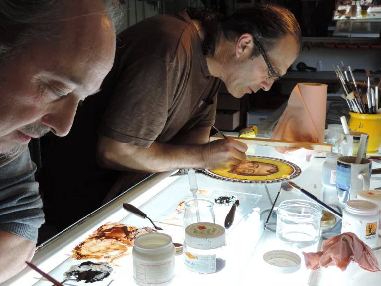
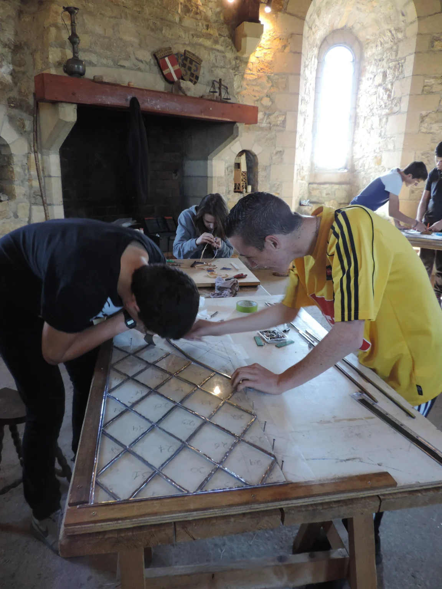

Galerie


Transmettre l’art du temps et de la lumière
Didier Cottier propose des formations longues, des stages d’initiation ou de perfectionnement, des conférences, ainsi que des ateliers pédagogiques pour adultes et enfants.
Ces sessions permettent de découvrir les secrets de fabrication des vitraux et cadrans solaires dans un cadre artisanal et bienveillant.
Chaque participant repart avec sa propre réalisation. L’accent est mis sur la compréhension des techniques anciennes et le respect des matériaux nobles.
Aucune compétence préalable n’est nécessaire : la curiosité et l’envie d’apprendre suffisent pour s'initier à une démarche artisanale authentique.
Les formations s’adressent à tous : passionnés de patrimoine, artistes, enseignants, curieux, enfants. Elles peuvent s’organiser sur demande dans différents lieux, et s’adapter à des projets scolaires, associatifs ou professionnels.
